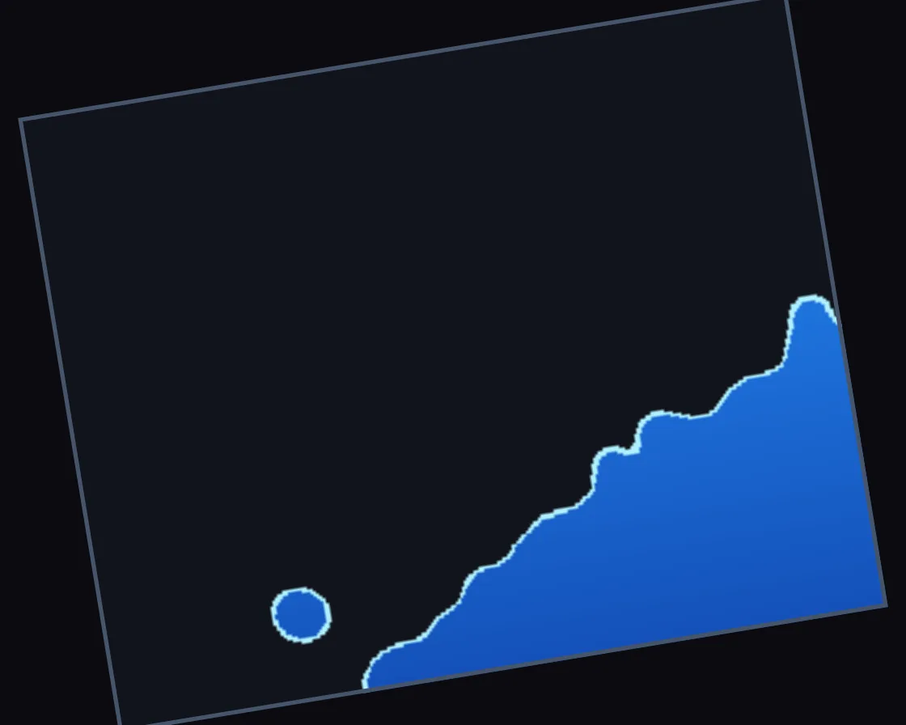

SPH water tank
SPH water tank is a WebGL effect: real SPH particles, splatted into one surface and traced through glass. One plain JavaScript file with no dependencies; add it with npx motion-library add sph-water.

Open it live, tune it and copy the code
What is SPH water tank?
Water sloshes in a rocking glass tank, climbing the walls, foaming and casting caustics; the pointer tilts it.
How does SPH water tank work?
SPH with double density relaxation; particles splat into a float field, and each pixel traces it in perspective for absorption, meniscus, Fresnel surface and caustics.
How do I add SPH water tank to my website?
- In your project folder, run
npx motion-library add sph-water. It writesanimations/sph-water.js. Needs Node 18 or newer. - Import it and call it with a container element that has a size:
import fx from './animations/sph-water.js'; const stop = fx(document.querySelector('#hero')); - Call
stop()to clean up, for example when a component unmounts.
Every setting below is also a flag, so you can install it already tuned: npx motion-library add sph-water --particles 2800.
What settings can I tweak?
| Setting | Flag | Default | Range | Step |
|---|---|---|---|---|
| Particles | --particles | 1600 | 800 to 2800 | 100 |
| Slosh | --slosh | 1 | 0 to 1.5 | 0.05 |
Specifications
- Renderer
- WebGL
- Category
- Fluid
- Dependencies
- None
- File size
- 26.4 KB, unminified
- Interactive
- Yes: it responds to the pointer
- Reduced motion
- Respects prefers-reduced-motion
- Licence
- MIT-0: use it anywhere, no credit needed
Source code
// SPH water tank: a glass tank of water rocks on a pivot in a dark studio and the water sloshes, climbs the walls,
// breaks and foams. Underneath is a real particle fluid: smoothed-particle hydrodynamics in the double-density-
// relaxation form. Every particle sums its neighbours through two smoothing kernels; the first sum is its density,
// and the difference from the rest density is a pressure that pushes crowded particles apart; the second ("near"
// density) keeps them from clumping and gives the surface its tension. The relaxation is Gauss-Seidel, so each
// particle's push lands at once, which keeps it stiff and stable; viscosity impulses calm the jitter and a uniform
// grid finds neighbours. Gravity is turned into the tank's frame as it tilts, with the swing of the tank itself
// (Euler and centrifugal forces) added. The particles are never drawn as dots: each is splatted as a smooth kernel
// into a float texture, and the water is where that field crosses a threshold. Every pixel then traces through the
// tank in perspective: through the front glass into the body of water (light absorbed along the path, a teal glow
// where light from above scatters, shafts of light focused by the waves, computed each frame from the real surface,
// and a caustic net on the floor), or onto the top surface seen from above (a Fresnel mirror of the fluted wall,
// broken by ripples), with the bright meniscus where water meets glass, foam where it churns, and spray that bends
// the wall behind it like little lenses. The pointer tilts the tank.
const PARAMS = { particles: 1600, slosh: 1 };
export default function (stage) {
const canvas = document.createElement('canvas');
canvas.style.cssText = 'position:absolute;inset:0;width:100%;height:100%;display:block;touch-action:pan-y';
stage.append(canvas);
const gl = canvas.getContext('webgl2', { antialias: false });
if (!gl) { stage.textContent = 'This needs WebGL2.'; return () => canvas.remove(); }
const reduce = matchMedia('(prefers-reduced-motion: reduce)').matches;
const floatFB = !!gl.getExtension('EXT_color_buffer_float');
// ---- the fluid, in units of the kernel radius h
const N = Math.max(400, Math.min(4000, Math.round(PARAMS.particles)));
const SC = Math.sqrt(N / 1600), TW = 32 * SC, TH = 16 * SC, SP = 0.42; // tank interior; particle spacing at rest
const px = new Float32Array(N), py = new Float32Array(N), vx = new Float32Array(N), vy = new Float32Array(N);
const ox = new Float32Array(N), oy = new Float32Array(N), rho = new Float32Array(N), rhoN = new Float32Array(N);
const foam = new Float32Array(N), deg = new Int32Array(N), nst = new Int32Array(N + 1); let nbr = new Int32Array(N * 40);
{ // a level body of water, packed in a hexagonal lattice
const cols = Math.floor((TW - 0.6) / SP); let k = 0;
for (let r = 0; k < N; r++) for (let c = 0; c < cols && k < N; c++, k++) { px[k] = 0.3 + c * SP + (r & 1) * SP * 0.5; py[k] = 0.3 + r * SP * 0.866; }
}
const GW = Math.ceil(TW) + 2, GH = Math.ceil(TH + 8) + 2, cellOf = new Int32Array(N), cnt = new Int32Array(GW * GH), start = new Int32Array(GW * GH + 1), order = new Int32Array(N);
let PI = new Int32Array(N * 24), PJ = new Int32Array(N * 24), NP = 0;
function buildPairs() {
cnt.fill(0);
for (let i = 0; i < N; i++) { const cx = Math.min(GW - 1, Math.max(0, (px[i] | 0) + 1)), cy = Math.min(GH - 1, Math.max(0, (py[i] | 0) + 1)); cellOf[i] = cy * GW + cx; cnt[cellOf[i]]++; }
start[0] = 0; for (let c = 0; c < GW * GH; c++) start[c + 1] = start[c] + cnt[c];
const fill = start.slice(0, GW * GH); for (let i = 0; i < N; i++) order[fill[cellOf[i]]++] = i;
NP = 0;
for (let cy = 0; cy < GH; cy++) for (let cx = 0; cx < GW; cx++) {
const c = cy * GW + cx, a0 = start[c], a1 = start[c + 1];
if (a0 === a1) continue;
for (let nb = 0; nb < 5; nb++) { // this cell and four neighbours: each pair once
const nx = cx + (nb === 1 ? 1 : nb === 2 ? -1 : nb === 3 ? 0 : nb === 4 ? 1 : 0), ny = cy + (nb >= 2 ? 1 : 0);
if (nx < 0 || nx >= GW || ny >= GH) continue;
const d = ny * GW + nx, b0 = start[d], b1 = start[d + 1];
for (let a = a0; a < a1; a++) {
const i = order[a];
for (let b = nb === 0 ? a + 1 : b0; b < b1; b++) {
const j = order[b], ddx = px[j] - px[i], ddy = py[j] - py[i];
if (ddx * ddx + ddy * ddy < 1) {
if (NP >= PI.length) { const g = PI.length * 2, A = new Int32Array(g), B = new Int32Array(g); A.set(PI); B.set(PJ); PI = A; PJ = B; }
PI[NP] = i; PJ[NP++] = j;
}
}
}
}
}
}
const density = () => {
rho.fill(0); rhoN.fill(0);
for (let p = 0; p < NP; p++) {
const i = PI[p], j = PJ[p], q = Math.sqrt((px[j] - px[i]) ** 2 + (py[j] - py[i]) ** 2);
if (q >= 1) continue; const a = 1 - q, a2 = a * a, a3 = a2 * a;
rho[i] += a2; rho[j] += a2; rhoN[i] += a3; rhoN[j] += a3;
}
};
buildPairs(); density();
let R0 = 0; { const s = []; for (let i = 0; i < N; i++) if (py[i] > 2 && py[i] < 4) s.push(rho[i]); s.sort((a, b) => a - b); R0 = s[s.length >> 1] || 3; }
const K = 0.08, KN = 0.1, SIG = 1, BET = 0.2, G = 260, DT = 1 / 180;
function step(gx, gy, alpha, wa) {
// gravity in the tank's frame, plus the Euler and centrifugal forces of the tank's own swing about the pivot
for (let i = 0; i < N; i++) {
const rx = px[i] - TW / 2, ry = py[i] + 1.6;
vx[i] += (gx + alpha * ry + wa * wa * rx) * DT; vy[i] += (gy - alpha * rx + wa * wa * ry) * DT;
}
// viscosity: pairs closing on each other trade a little momentum
for (let p = 0; p < NP; p++) {
const i = PI[p], j = PJ[p], ddx = px[j] - px[i], ddy = py[j] - py[i], q = Math.sqrt(ddx * ddx + ddy * ddy);
if (q >= 1 || q < 1e-6) continue;
const nx = ddx / q, ny = ddy / q, u = (vx[i] - vx[j]) * nx + (vy[i] - vy[j]) * ny;
if (u <= 0) continue;
const I = DT * (1 - q) * (SIG * u + BET * u * u) * 0.5;
vx[i] -= I * nx; vy[i] -= I * ny; vx[j] += I * nx; vy[j] += I * ny;
}
for (let i = 0; i < N; i++) { ox[i] = px[i]; oy[i] = py[i]; px[i] += vx[i] * DT; py[i] += vy[i] * DT; }
buildPairs();
deg.fill(0); for (let p = 0; p < NP; p++) { deg[PI[p]]++; deg[PJ[p]]++; } // neighbour lists, both ways
nst[0] = 0; for (let i = 0; i < N; i++) nst[i + 1] = nst[i] + deg[i];
if (nbr.length < nst[N]) nbr = new Int32Array(nst[N] * 2);
for (let i = 0; i < N; i++) deg[i] = nst[i];
for (let p = 0; p < NP; p++) { nbr[deg[PI[p]]++] = PJ[p]; nbr[deg[PJ[p]]++] = PI[p]; }
// double density relaxation (Gauss-Seidel): each particle measures its crowding through both kernels and at
// once pushes its neighbours away along the line between them, by its pressure and near-pressure
for (let o = 0; o < N; o++) {
const i = order[o], xi = px[i], yi = py[i]; let d = 0, dn = 0;
for (let k = nst[i]; k < nst[i + 1]; k++) { const j = nbr[k], q = Math.sqrt((px[j] - xi) ** 2 + (py[j] - yi) ** 2); if (q < 1) { const a = 1 - q; d += a * a; dn += a * a * a; } }
rho[i] = d; rhoN[i] = dn;
const P = K * (d - R0), PN = KN * dn; let ax = 0, ay = 0;
for (let k = nst[i]; k < nst[i + 1]; k++) {
const j = nbr[k], ddx = px[j] - xi, ddy = py[j] - yi, q = Math.sqrt(ddx * ddx + ddy * ddy);
if (q >= 1 || q < 1e-6) continue;
const a = 1 - q, D = (P * a + PN * a * a) * 0.5 / q;
px[j] += D * ddx; py[j] += D * ddy; ax -= D * ddx; ay -= D * ddy;
}
px[i] += ax; py[i] += ay;
}
for (let i = 0; i < N; i++) {
let x = px[i], y = py[i];
const m = 0.18;
if (x < m) x = m + (m - x) * 0.1; else if (x > TW - m) x = TW - m - (x - TW + m) * 0.1;
if (y < m) y = m + (m - y) * 0.1; else if (y > TH + 6) y = TH + 6;
px[i] = x; py[i] = y;
vx[i] = (x - ox[i]) / DT; vy[i] = (y - oy[i]) / DT;
const sp = Math.sqrt(vx[i] * vx[i] + vy[i] * vy[i]);
if (sp > 60) { vx[i] *= 60 / sp; vy[i] *= 60 / sp; }
// churned water turns white: fast, thinly surrounded particles gain foam, which fades as it settles
foam[i] = Math.min(1, foam[i] * (1 - DT * 0.9) + DT * Math.max(0, sp - 10) * 0.04 * (rho[i] < R0 * 0.8 ? 2.2 : 0.6));
}
}
// ---- the water's surface, column by column, and the caustics it focuses below it
const CX = 128, CY = 64, surf = new Float32Array(CX), caus = new Uint8Array(CX * CY), acc = new Float32Array(CX * CY);
function surface() {
surf.fill(0);
for (let i = 0; i < N; i++) if (rho[i] > R0 * 0.55) { const c = Math.min(CX - 1, Math.max(0, (px[i] / TW * CX) | 0)); if (py[i] > surf[c]) surf[c] = py[i]; }
for (let c = 0; c < CX; c++) if (surf[c] === 0) surf[c] = c > 0 ? surf[c - 1] : 0;
const tmp = Float32Array.from(surf);
for (let pass = 0; pass < 3; pass++) { // smoothed three times, so its slope is calm enough to mirror
for (let c = 0; c < CX; c++) { let s = 0, w = 0; for (let k = -4; k <= 4; k++) { const j = Math.min(CX - 1, Math.max(0, c + k)), ww = 5 - Math.abs(k); s += tmp[j] * ww; w += ww; } surf[c] = s / w; }
tmp.set(surf);
}
for (let c = 0; c < CX; c++) surf[c] += 0.3;
// light falling straight down bends at the surface toward its normal; each column's ray lands displaced in
// proportion to the slope above it, and where rays crowd the light is brighter
acc.fill(0); const dxc = TW / CX;
for (let c = 1; c < CX - 1; c++) {
const sl = (surf[c + 1] - surf[c - 1]) / (2 * dxc), curv = (surf[c + 1] + surf[c - 1] - 2 * surf[c]) / (dxc * dxc);
for (let r = 0; r < CY; r++) {
const depth = (r + 0.5) / CY * TH, xl = c + 0.5 + (sl * 0.25 + curv * 0.04 * depth) * depth / dxc * 1.4, x0 = Math.floor(xl - 0.5), f = xl - 0.5 - x0;
if (x0 >= 0 && x0 < CX) acc[r * CX + x0] += 1 - f; if (x0 + 1 >= 0 && x0 + 1 < CX) acc[r * CX + x0 + 1] += f;
}
}
for (let r = 0; r < CY; r++) for (let c = 0; c < CX; c++) {
const a = acc[r * CX + c] * 0.5 + 0.25 * (acc[r * CX + Math.max(0, c - 1)] + acc[r * CX + Math.min(CX - 1, c + 1)]);
caus[r * CX + c] = Math.min(255, a * 64);
}
}
// ---- rendering
const sh = (type, src) => { const s = gl.createShader(type); gl.shaderSource(s, src); gl.compileShader(s); if (!gl.getShaderParameter(s, gl.COMPILE_STATUS)) throw new Error(gl.getShaderInfoLog(s)); return s; };
const program = (vs, fs) => {
const p = gl.createProgram(); gl.attachShader(p, sh(gl.VERTEX_SHADER, vs)); gl.attachShader(p, sh(gl.FRAGMENT_SHADER, fs)); gl.linkProgram(p);
if (!gl.getProgramParameter(p, gl.LINK_STATUS)) throw new Error(gl.getProgramInfoLog(p));
const u = {}; for (let i = 0, n = gl.getProgramParameter(p, gl.ACTIVE_UNIFORMS); i < n; i++) { const nm = gl.getActiveUniform(p, i).name.replace('[0]', ''); u[nm] = gl.getUniformLocation(p, nm); }
return { p, u };
};
const FX = 9, FW = Math.ceil((TW + 2) * FX), FH = Math.ceil((TH + 9) * FX), FSC = 0.125; // the field: texels per h
const splat = program(`#version 300 es
layout(location = 0) in vec4 a; uniform vec2 S; uniform float PS; out float f;
void main() { gl_Position = vec4((a.xy + 1.) / S * 2. - 1., 0, 1); gl_PointSize = PS; f = a.w; }`, `#version 300 es
precision highp float; in float f; out vec4 o; uniform float FSC;
void main() { vec2 c = gl_PointCoord * 2. - 1.; float r2 = dot(c, c); if (r2 > 1.) discard; float w = (1. - r2); w = w * w * w * FSC; o = vec4(w, w * f, 0, 0); }`);
const comp = program(`#version 300 es
in vec2 p; void main() { gl_Position = vec4(p, 0, 1); }`, `#version 300 es
precision highp float; out vec4 o;
uniform sampler2D FLD, CAU, SRF; uniform vec2 R, PIV, FS; uniform float SCL, ANG, TW, TH, FSC, T;
#define KAP .16
#define DW 8.5
#define TR .62
float h21(vec2 p) { vec3 q = fract(p.xyx * .1031); q += dot(q, q.yzx + 33.33); return fract((q.x + q.y) * q.z); }
float vn(vec2 p) { vec2 i = floor(p), f = fract(p); f = f * f * (3. - 2. * f);
return mix(mix(h21(i), h21(i + vec2(1, 0)), f.x), mix(h21(i + vec2(0, 1)), h21(i + 1.), f.x), f.y); }
vec2 fuv(vec2 q) { return (q + 1.) / FS; }
float F(vec2 q) { return texture(FLD, fuv(q)).r / FSC; }
float surfY(float x) { float u = clamp(x / TW, 0., 1.) * 127.; int i = int(u); return mix(texelFetch(SRF, ivec2(i, 0), 0).r, texelFetch(SRF, ivec2(min(i + 1, 127), 0), 0).r, fract(u)); }
float caus(float x, float d) { return texture(CAU, vec2(x / TW, d / TH)).r * 4.; }
// the studio behind: a deep blue-grey fluted wall lit from above, and a dark floor; in screen pixels
vec3 wall(vec2 s) {
vec2 u = s / R.y; float rib = fract(u.x * 26.), sh = smoothstep(0., .5, rib) * smoothstep(1., .55, rib);
float pool = exp(-pow((u.x - .5 * R.x / R.y) * 1.3, 2.) - pow((u.y - .78) * 1.6, 2.));
vec3 c = vec3(.006, .008, .011) + vec3(.045, .055, .068) * pool * (.35 + .65 * sh) + vec3(.004, .005, .007) * sh;
return c * smoothstep(-.1, .35, u.y);
}
vec3 env(vec3 r) { // what glass and water mirror: the dark room, a long strip light behind, a softbox above
// the room as the water mirrors it: the dark fluted wall with its pool of light, and a softbox high above
float rib = fract(r.x * 9.), shr = smoothstep(0., .5, rib) * smoothstep(1., .55, rib);
vec3 c = vec3(.01, .013, .018) + vec3(.09, .11, .13) * exp(-r.x * r.x * 3.) * smoothstep(.02, .3, r.y) * smoothstep(.75, .35, r.y) * (.5 + .5 * shr);
c += 1.6 * smoothstep(.62, .8, r.y) * smoothstep(.6, .25, abs(r.x));
return c;
}
vec3 aces(vec3 x) { return clamp((x * (2.51 * x + .03)) / (x * (2.43 * x + .59) + .14), 0., 1.); }
void main() {
vec2 s = gl_FragCoord.xy, rel = (s - PIV) / SCL, cs = vec2(cos(ANG), sin(ANG));
vec2 P = vec2(cs.x * rel.x + cs.y * rel.y, -cs.y * rel.x + cs.x * rel.y) + vec2(TW * .5, -1.6); // tank coordinates
vec2 V = vec2(TW * .5, TH + 3.), dq = (P - V) * KAP; // perspective: depth pushes away from V
vec3 col = wall(s);
// the floor and the pivot stand (fixed to the room, so in screen space)
float fy = PIV.y - 1.6 * SCL;
vec2 ps = s - PIV;
// the slab of the ray inside the tank: Q(z) = P + dq z for z in [0, 1]
vec2 lo = vec2(0), hi = vec2(TW, TH);
vec2 t0 = (lo - P) / dq, t1 = (hi - P) / dq, tn = min(t0, t1), tf = max(t0, t1);
float zin = max(max(tn.x, tn.y), 0.), zout = min(min(tf.x, tf.y), 1.);
bool inTank = zin < zout;
// the stand: a dark steel wedge from the floor to the pivot
float st = min(max(abs(ps.x) - (.55 + max(0., -ps.y / SCL) * .45) * SCL, ps.y), length(ps) - .55 * SCL); // a wedge, and the axle
float floorY = PIV.y - 2.2 * SCL;
if (s.y < floorY + 2.) col = vec3(.012, .013, .016) + .03 * exp(-pow(ps.x / (TW * SCL * .6), 2.)) * vec3(.6, .7, .8)
+ vec3(.0, .035, .045) * exp(-pow(ps.x / (TW * SCL * .42), 2.) - pow((s.y - floorY) / (SCL * 3.), 2.)); // light let through the water
col *= 1. - .5 * exp(-pow(ps.x / (TW * SCL * .55), 4.)) * smoothstep(floorY + 2., floorY - 30., s.y) * step(s.y, floorY + 2.);
if (st < 0. && s.y > floorY) col = vec3(.02, .021, .025) + vec3(.05, .055, .06) * smoothstep(-SCL, 0., ps.x) * smoothstep(0., -SCL * .2, st);
if (inTank) {
bool front = zin <= 0.;
// march front to back: where does the ray first meet water?
float zw = -1.; float prev = 0.;
for (int i = 0; i < 18; i++) {
float z = mix(zin, zout, float(i) / 17.);
float f = F(P + dq * z);
if (f > TR) { zw = z; if (i > 0) { float a = mix(zin, zout, float(i - 1) / 17.), b = z; for (int k = 0; k < 4; k++) { float m = .5 * (a + b); if (F(P + dq * m) > TR) b = m; else a = m; } zw = b; } break; }
}
vec2 Qx = P + dq * zout; // where the ray leaves the tank
bool viaFloor = Qx.y < .01 && zout < 1.;
vec3 behind = wall(s + (Qx - P) * SCL * .0);
vec3 floorC = vec3(.06, .075, .08);
float frontLine = 0.;
if (zw >= 0. && zw <= zin + .001 && front) {
// ---- through the front glass into the water
float f0 = F(P), e = .6 / SCL;
vec2 g = vec2(F(P + vec2(e, 0)) - F(P - vec2(e, 0)), F(P + vec2(0, e)) - F(P - vec2(0, e))) / (2. * e);
float sy = surfY(P.x), dep = max(sy - P.y, 0.);
float thick = smoothstep(TR, TR + 2.5, f0); // thin spray is thin; the body is the tank's depth
float path = (zout - zin) * DW * mix(.12, 1., thick);
vec2 lens = -g / (1. + length(g)) * 14. * (1. - thick * .7); // droplets and the surface bend what is behind
vec2 bs = PIV + (s - PIV) * .955 + lens * SCL * .25;
float zf = zout;
// the floor's caustics: the light focused by the real surface above, broken into a net across the depth
vec2 fp = vec2(Qx.x, zf * 9.); vec2 w2 = fp + .6 * vec2(vn(fp * .8 + T * .4), vn(fp * .8 - T * .3 + 4.));
float net = pow(1. - abs(vn(w2 * 1.2) - vn(w2 * 1.2 + 2.7)) * 2., 5.);
vec3 bk = viaFloor ? floorC * (.45 + 1.1 * net * caus(Qx.x, sy)) : wall(bs);
vec3 tr = exp(-path * vec3(.2, .055, .045));
float lit = exp(-dep * .2);
float shafts = caus(P.x + (Qx.x - P.x) * .5, dep);
vec3 glow = (vec3(.006, .045, .06) * lit * (.6 + .5 * shafts * shafts) + vec3(.004, .018, .024)) * thick;
col = bk * tr + glow;
float fm = texture(FLD, fuv(P)).g / max(texture(FLD, fuv(P)).r, 1e-4);
// churned water: foam on top, a fizz of fine bubbles below it
float bn = vn(P * 4.5 + vec2(0, T * 1.5)) * .65 + vn(P * 10. - vec2(0, T * 2.5)) * .35;
col = mix(col, vec3(.5, .62, .66) * (.35 + .65 * lit), smoothstep(1.05 - fm, 1.4 - fm, bn) * .75);
// the meniscus: the waterline against the glass, a bright thin line
float d = (f0 - TR) / max(length(g), 1e-3) * SCL;
frontLine = exp(-d * d * .5) * smoothstep(.0, .2, length(g));
col += vec3(.75, .95, 1.) * frontLine * .7 + vec3(.2, .5, .55) * exp(-d * .25) * smoothstep(.0, .2, length(g)) * .25;
} else if (zw > 0.) {
// ---- the top of the water, seen from above
vec2 Q = P + dq * zw; float e = .35;
vec2 g = vec2(F(Q + vec2(e, 0)) - F(Q - vec2(e, 0)), F(Q + vec2(0, e)) - F(Q - vec2(0, e)));
float sl = (surfY(Q.x + .5) - surfY(Q.x - .5)); // the smoothed surface's slope
vec2 rp = vec2(Q.x * 1.3 + T * .6, zw * 7.); // ripples across the surface, too small to simulate
vec3 n = normalize(vec3(-sl + .08 * (vn(rp) - vn(rp * 1.9 + 5.)), 1., .14 * (vn(rp * 1.4 + 9.) - .5)));
vec3 v = normalize(vec3(dq / DW, 1.));
float fr = .02 + .98 * pow(1. - max(dot(n, -v), 0.), 5.);
vec3 refl = env(reflect(v, n));
float sy = surfY(Q.x);
vec3 below = vec3(.008, .05, .065) * (.6 + .5 * caus(Q.x, 1.5)) + floorC * .1;
col = mix(below, refl, clamp(fr, 0., 1.));
float fm = texture(FLD, fuv(Q)).g / max(texture(FLD, fuv(Q)).r, 1e-4);
vec2 fq = vec2(Q.x, zw * 9.); // foam lies across the surface, in depth too
float bn = vn(fq * 2.2 + T * .3) * .7 + vn(fq * 5.) * .3;
col = mix(col, vec3(.55, .66, .7), smoothstep(1.05 - fm * 1.1, 1.4 - fm * 1.1, bn) * .8);
// the back waterline, where the surface meets the far glass
col += vec3(.4, .6, .65) * .3 * smoothstep(.06, 0., abs(zw - zout) * DW);
} else {
// ---- air inside the tank: the far glass and the floor
col = viaFloor ? floorC * .6 : behind * .92;
}
// the glass: a faint sheen on the front pane, then the edges
if (front) {
float sheen = smoothstep(.0, 1., 1. - abs((P.x / TW - P.y / TH * .45) - .25) * 4.) * .025;
col = col * .96 + sheen * vec3(.6, .7, .8) + env(vec3(0, .3, 1.)) * .0;
}
}
// tank edges: the glass seen edge-on glows green; the far edges show faintly through
vec2 Pb = (P + V * KAP) / (1. + KAP); // a point on the back face appears here
float px1 = 1. / SCL;
float eF = min(min(abs(P.x), abs(P.x - TW)), 1e3), eB = min(abs(P.x - (0. + V.x * KAP) / (1. + KAP)), abs(P.x - (TW + V.x * KAP) / (1. + KAP)));
float inY = step(-.45, P.y) * step(P.y, TH), inYb = step((V.y * KAP) / (1. + KAP), P.y) * step(P.y, (TH + V.y * KAP) / (1. + KAP));
float edgeV = smoothstep(.3, .1, eF) * inY;
col = mix(col, vec3(.12, .2, .19) + vec3(.35, .5, .48) * smoothstep(.12, .0, abs(eF - .12)), edgeV * .9);
col += vec3(.1, .16, .16) * smoothstep(1.5 * px1, 0., eB) * inYb;
float bot = step(-.45, P.y) * step(P.y, 0.) * step(0., P.x) * step(P.x, TW);
col = mix(col, vec3(.1, .17, .16) + vec3(.3, .45, .42) * smoothstep(.1, 0., abs(P.y + .05)), bot * .9);
float rimF = smoothstep(2. * px1, 0., abs(P.y - TH)) * step(0., P.x) * step(P.x, TW);
float yb = (TH + V.y * KAP) / (1. + KAP), rimB = smoothstep(1.5 * px1, 0., abs(P.y - yb)) * step((V.x * KAP) / (1. + KAP), P.x) * step(P.x, (TW + V.x * KAP) / (1. + KAP));
col += vec3(.45, .62, .6) * rimF + vec3(.25, .35, .34) * rimB;
col = aces(col * 1.25);
col *= 1. - .25 * pow(length(s / R - .5) * 1.3, 2.5);
o = vec4(pow(col, vec3(1. / 2.2)) + (h21(s) - .5) / 255., 1);
}`);
// buffers and textures
const pbuf = gl.createBuffer(), pdata = new Float32Array(N * 4);
const pvao = gl.createVertexArray(); gl.bindVertexArray(pvao); gl.bindBuffer(gl.ARRAY_BUFFER, pbuf); gl.bufferData(gl.ARRAY_BUFFER, pdata.byteLength, gl.DYNAMIC_DRAW);
gl.enableVertexAttribArray(0); gl.vertexAttribPointer(0, 4, gl.FLOAT, false, 0, 0);
const qvao = gl.createVertexArray(); gl.bindVertexArray(qvao); gl.bindBuffer(gl.ARRAY_BUFFER, gl.createBuffer());
gl.bufferData(gl.ARRAY_BUFFER, new Float32Array([-1, -1, 3, -1, -1, 3]), gl.STATIC_DRAW); gl.enableVertexAttribArray(0); gl.vertexAttribPointer(0, 2, gl.FLOAT, false, 0, 0);
gl.bindVertexArray(null);
const tex = (w, h, ifmt, fmt, type, filter) => { const t = gl.createTexture(); gl.bindTexture(gl.TEXTURE_2D, t); gl.texImage2D(gl.TEXTURE_2D, 0, ifmt, w, h, 0, fmt, type, null);
gl.texParameteri(gl.TEXTURE_2D, gl.TEXTURE_MIN_FILTER, filter); gl.texParameteri(gl.TEXTURE_2D, gl.TEXTURE_MAG_FILTER, filter);
gl.texParameteri(gl.TEXTURE_2D, gl.TEXTURE_WRAP_S, gl.CLAMP_TO_EDGE); gl.texParameteri(gl.TEXTURE_2D, gl.TEXTURE_WRAP_T, gl.CLAMP_TO_EDGE); return t; };
const fieldT = floatFB ? tex(FW, FH, gl.RGBA16F, gl.RGBA, gl.HALF_FLOAT, gl.LINEAR) : tex(FW, FH, gl.RGBA8, gl.RGBA, gl.UNSIGNED_BYTE, gl.LINEAR);
const fbo = gl.createFramebuffer(); gl.bindFramebuffer(gl.FRAMEBUFFER, fbo); gl.framebufferTexture2D(gl.FRAMEBUFFER, gl.COLOR_ATTACHMENT0, gl.TEXTURE_2D, fieldT, 0); gl.bindFramebuffer(gl.FRAMEBUFFER, null);
const causT = tex(CX, CY, gl.R8, gl.RED, gl.UNSIGNED_BYTE, gl.LINEAR), surfT = tex(CX, 1, gl.R32F, gl.RED, gl.FLOAT, gl.NEAREST);
gl.pixelStorei(gl.UNPACK_ALIGNMENT, 1);
let W = 1, H = 1;
const resize = () => { const w = stage.clientWidth || 1, h = stage.clientHeight || 1, d = Math.min(devicePixelRatio, 2, Math.max(0.5, Math.sqrt(760000 / (w * h)))); W = canvas.width = Math.max(1, (w * d) | 0); H = canvas.height = Math.max(1, (h * d) | 0); };
const ro = new ResizeObserver(resize); ro.observe(stage); resize();
// the tilt: the pointer's x leans the tank; left alone it rocks to one side, holds, rights itself, and so on
let ptr = 0.5, lastMove = -1e9;
const onMove = e => { const b = canvas.getBoundingClientRect(); ptr = (e.clientX - b.left) / b.width; lastMove = performance.now(); };
canvas.addEventListener('pointermove', onMove); canvas.addEventListener('pointerdown', onMove);
const ease = u => u <= 0 ? 0 : u >= 1 ? 1 : u * u * (3 - 2 * u);
const auto = t => {
const c = t % 8, m = 0.21;
if (c < 0.45) return m * ease(c / 0.45); if (c < 2.1) return m; if (c < 2.55) return m * (1 - ease((c - 2.1) / 0.45)); if (c < 4) return 0;
if (c < 4.45) return -m * ease((c - 4) / 0.45); if (c < 6.1) return -m; if (c < 6.55) return -m * (1 - ease((c - 6.1) / 0.45)); return 0;
};
let ang = 0, angV = 0, raf, last = performance.now(), t = 0, acc0 = 0;
function frame(now) {
const dt = Math.min(0.05, (now - last) / 1000); last = now; t += dt;
const live = now - lastMove < 2000;
const target = live ? Math.max(-0.26, Math.min(0.26, (0.5 - ptr) * 0.62)) : reduce ? 0.03 * Math.sin(t * 0.25) : auto(t) * PARAMS.slosh;
acc0 += dt;
let steps = 0;
while (acc0 >= DT && steps < 6) {
const a = 60 * (target - ang) - 14 * angV; // the tank follows its target like a heavy thing
angV += a * DT; ang += angV * DT;
step(-G * Math.sin(ang), -G * Math.cos(ang), a, angV);
acc0 -= DT; steps++;
}
if (steps === 6) acc0 = 0;
surface();
// splat
for (let i = 0; i < N; i++) { pdata[i * 4] = px[i]; pdata[i * 4 + 1] = py[i]; pdata[i * 4 + 2] = 0; pdata[i * 4 + 3] = foam[i]; }
gl.bindBuffer(gl.ARRAY_BUFFER, pbuf); gl.bufferSubData(gl.ARRAY_BUFFER, 0, pdata);
gl.bindFramebuffer(gl.FRAMEBUFFER, fbo); gl.viewport(0, 0, FW, FH); gl.clearColor(0, 0, 0, 0); gl.clear(gl.COLOR_BUFFER_BIT);
gl.enable(gl.BLEND); gl.blendFunc(gl.ONE, gl.ONE);
gl.useProgram(splat.p); gl.uniform2f(splat.u.S, TW + 2, TH + 9); gl.uniform1f(splat.u.PS, 2 * 1.05 * FX); gl.uniform1f(splat.u.FSC, FSC);
gl.bindVertexArray(pvao); gl.drawArrays(gl.POINTS, 0, N);
gl.disable(gl.BLEND); gl.bindFramebuffer(gl.FRAMEBUFFER, null);
gl.bindTexture(gl.TEXTURE_2D, causT); gl.texSubImage2D(gl.TEXTURE_2D, 0, 0, 0, CX, CY, gl.RED, gl.UNSIGNED_BYTE, caus);
gl.bindTexture(gl.TEXTURE_2D, surfT); gl.texSubImage2D(gl.TEXTURE_2D, 0, 0, 0, CX, 1, gl.RED, gl.FLOAT, surf);
// composite
gl.viewport(0, 0, W, H); gl.useProgram(comp.p);
const scl = Math.min(W * 0.7 / (TW + 1), H * 0.5 / (TH + 1));
gl.uniform2f(comp.u.R, W, H); gl.uniform2f(comp.u.PIV, W / 2, H * 0.45 - (TH / 2 - 1.6) * scl); gl.uniform1f(comp.u.SCL, scl);
gl.uniform1f(comp.u.ANG, ang); gl.uniform1f(comp.u.TW, TW); gl.uniform1f(comp.u.TH, TH); gl.uniform2f(comp.u.FS, TW + 2, TH + 9); gl.uniform1f(comp.u.FSC, FSC); gl.uniform1f(comp.u.T, t);
gl.activeTexture(gl.TEXTURE0); gl.bindTexture(gl.TEXTURE_2D, fieldT); gl.uniform1i(comp.u.FLD, 0);
gl.activeTexture(gl.TEXTURE1); gl.bindTexture(gl.TEXTURE_2D, causT); gl.uniform1i(comp.u.CAU, 1);
gl.activeTexture(gl.TEXTURE2); gl.bindTexture(gl.TEXTURE_2D, surfT); gl.uniform1i(comp.u.SRF, 2);
gl.activeTexture(gl.TEXTURE0);
gl.bindVertexArray(qvao); gl.drawArrays(gl.TRIANGLES, 0, 3);
raf = requestAnimationFrame(frame);
}
raf = requestAnimationFrame(frame);
return () => { cancelAnimationFrame(raf); ro.disconnect(); canvas.removeEventListener('pointermove', onMove); canvas.removeEventListener('pointerdown', onMove); gl.getExtension('WEBGL_lose_context')?.loseContext(); canvas.remove(); };
}